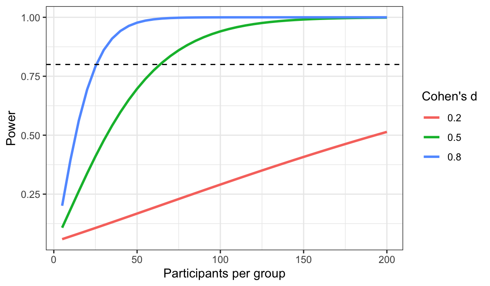

library(tidyverse)
library(behdslabs)
library(pwr)
library(afex)22 Statistical Power
Written for this book by Giorgio Arcara, with an AI assistant (Claude). This chapter is not in Irizarry’s Introduction to Data Science.
A p-value above 0.05 does not show that there is no effect: a real difference can easily be missed by a study that is too small (Chapter 14). In Chapter 17, a lab study with 15 users per device missed a difference that was obvious with the full sample. The probability that a study detects an effect that is really there is called its power. Power is decided before the data are collected, mostly by choosing how many participants to test, and this is why it belongs to the planning of a study (see Sample size and precision in Chapter 4).
This chapter shows how to compute power and the required sample size in R, for the tests of the previous chapters: the t-test, the paired t-test, the Wilcoxon test, and the ANOVA. Each calculation needs an effect size, which is the topic of the companion chapter, Chapter 21.
22.1 The idea
A hypothesis test can go wrong in two ways. If there is no effect and we find a significant result, we make a Type I error, or false positive; its probability is \(\alpha\), usually 0.05. If there is an effect and we do not find a significant result, we make a Type II error, or false negative; its probability is called \(\beta\). Power is \(1 - \beta\): the probability of a significant result when the effect is real.
Power depends on four quantities, linked to each other:
- the effect size: larger effects are easier to detect;
- the sample size: more participants give more precise estimates;
- the significance level \(\alpha\): a stricter threshold, such as 0.01, needs more evidence;
- the power itself.
Fix any three, and the fourth is determined. The most common use is to fix the effect size, \(\alpha = 0.05\) and the desired power, usually 0.80 or 0.90, and compute the sample size.
Power is a probability over many possible studies, so we can estimate it by simulation, as in the exercises of Chapter 14. Suppose the true difference between two groups is half a standard deviation (d = 0.5), and we test 30 participants per group. We simulate 2,000 studies and count how often the t-test is significant:
set.seed(2026)
p_values <- replicate(2000, {
x <- rnorm(30, mean = 0, sd = 1)
y <- rnorm(30, mean = 0.5, sd = 1)
t.test(x, y)$p.value
})
mean(p_values < 0.05)
#> [1] 0.47Only about 47% of these studies find the effect, even though it is real in every one of them. The figure shows how power grows with the number of participants, for a small, a medium and a large effect:

The dashed line marks the conventional target of 80%. A large effect reaches it with about 25 participants per group, a medium one with about 65, and a small one needs about 400.
22.2 The pwr package
For the most common tests, power can be computed exactly, without simulation. The pwr package implements the formulas of Cohen’s classic book on power analysis. Install it once with install.packages("pwr").
Each function takes the four quantities as arguments; you leave out the one you want to compute. How many participants per group do we need to detect d = 0.5 with 80% power?
pwr.t.test(d = 0.5, sig.level = 0.05, power = 0.80)
#>
#> Two-sample t test power calculation
#>
#> n = 63.8
#> d = 0.5
#> sig.level = 0.05
#> power = 0.8
#> alternative = two.sided
#>
#> NOTE: n is number in *each* groupWe need about 64 participants per group (always round up). Leave out power instead, and the function tells us the power of a given design; this is the same calculation we did by simulation above:
pwr.t.test(d = 0.5, n = 30)
#>
#> Two-sample t test power calculation
#>
#> n = 30
#> d = 0.5
#> sig.level = 0.05
#> power = 0.478
#> alternative = two.sided
#>
#> NOTE: n is number in *each* groupThe default sig.level is 0.05, so from now on we leave it out.
22.3 Two independent groups: the t-test
Suppose we want to repeat the comparison of desktop and mobile users of Chapter 17 in a new lab study. How many participants do we need? It depends on the smallest effect we would care about. If only a medium effect matters, d = 0.5, we need the 64 per group computed above. If we want 90% power, or want to detect smaller effects, the numbers grow quickly:
pwr.t.test(d = 0.5, power = 0.90)$n
#> [1] 85
pwr.t.test(d = 0.3, power = 0.80)$n
#> [1] 175We can also turn the question around and ask what the 15-per-group lab study of Chapter 17 could detect. Its power for a medium effect was low:
pwr.t.test(d = 0.5, n = 15)$power
#> [1] 0.262And the smallest effect it could detect with 80% power was large:
pwr.t.test(n = 15, power = 0.80)$d
#> [1] 1.06Groups of different sizes are handled by pwr.t2n.test(). In ux_scores, there are many more desktop than mobile users. With the same total of 60 participants, unequal groups have less power than equal ones:
pwr.t2n.test(n1 = 30, n2 = 30, d = 0.5)$power
#> [1] 0.478
pwr.t2n.test(n1 = 45, n2 = 15, d = 0.5)$power
#> [1] 0.37822.4 Paired designs
For a paired t-test, pwr.t.test() takes type = "paired", and n becomes the number of participants, each measured twice:
pwr.t.test(d = 0.5, power = 0.80, type = "paired")
#>
#> Paired t test power calculation
#>
#> n = 33.4
#> d = 0.5
#> sig.level = 0.05
#> power = 0.8
#> alternative = two.sided
#>
#> NOTE: n is number of *pairs*The d here is \(d_z\), the average difference divided by the standard deviation of the differences (Chapter 21). This is where the advantage of within-subjects designs shows up. If the two measurements of the same person are correlated, with correlation \(\rho\), and the two conditions have the same standard deviation, then
\[ d_z = \frac{d}{\sqrt{2(1 - \rho)}} \]
where \(d\) is the effect size on the between-subjects scale. Reaction times of the same person in two conditions are often highly correlated. With \(\rho = 0.8\), a between-subjects d of 0.5 becomes a much larger \(d_z\):
dz <- 0.5 / sqrt(2 * (1 - 0.8))
dz
#> [1] 0.791
pwr.t.test(d = dz, power = 0.80, type = "paired")$n
#> [1] 14.6About 15 participants, measured twice, give the same power as 128 participants split into two groups. The gain shrinks as the correlation decreases: with \(\rho = 0.5\), \(d_z = d\), and the only advantage left is that each participant contributes two measurements instead of one.
22.5 The Wilcoxon test
There is no simple formula for the power of the Wilcoxon test, because it depends on the shape of the distributions. Simulation solves the problem. We write a function that simulates one study and returns the p-values of both tests, so that we can compare them:
sim_two_tests <- function(n, shift, rdist) {
x <- rdist(n)
y <- rdist(n) + shift
c(t_test = t.test(x, y)$p.value,
wilcoxon = wilcox.test(x, y)$p.value)
}The argument rdist is the function that generates the data. First, normal data, with a difference of half a standard deviation and 30 participants per group:
set.seed(1)
res_normal <- replicate(2000, sim_two_tests(30, 0.5, rnorm))
rowMeans(res_normal < 0.05)
#> t_test wilcoxon
#> 0.465 0.442With normal data, the t-test is slightly more powerful, but the loss with the Wilcoxon test is small: for normal data it needs only about 5% more participants for the same power. Now reaction-time-like data: right-skewed, with a long tail of slow responses. We use a log-normal distribution and the same shift:
rskewed <- function(n) rlnorm(n, meanlog = 0, sdlog = 0.8)
set.seed(1)
res_skewed <- replicate(2000, sim_two_tests(30, 0.5, rskewed))
rowMeans(res_skewed < 0.05)
#> t_test wilcoxon
#> 0.362 0.698With skewed data, the Wilcoxon test is much more powerful than the t-test. The long tail inflates the standard deviation, and with it the standard error of the t-test, while the ranks are not affected. This is one more reason to look at the data, or at data from similar studies, before choosing the test, and to use that same test in the power analysis.
22.6 ANOVA
For a one-way between-subjects ANOVA, pwr.anova.test() takes the number of groups k and the effect size as Cohen’s f (Chapter 21). How many participants per group do we need in an attention experiment with three conditions, to detect a medium effect, f = 0.25?
pwr.anova.test(k = 3, f = 0.25, power = 0.80)
#>
#> Balanced one-way analysis of variance power calculation
#>
#> k = 3
#> n = 52.4
#> f = 0.25
#> sig.level = 0.05
#> power = 0.8
#>
#> NOTE: n is number in each groupAbout 53 per group, 159 in total. If a previous study reported \(\eta^2\) instead of f, convert it first with \(f = \sqrt{\eta^2 / (1 - \eta^2)}\):
eta2 <- 0.06
sqrt(eta2 / (1 - eta2))
#> [1] 0.253This is the power of the global F test. If what you really care about is a specific comparison, such as no distractor versus visual distractor, plan the sample size for that comparison, with pwr.t.test(). Post-hoc comparisons are corrected for multiple testing (Chapter 19), and this reduces their power further.
For repeated-measures and mixed designs, the formulas need extra information, such as the correlations between conditions, and simulation is the simplest route. We simulate the three-condition Stroop task of Chapter 18, with smaller differences between the conditions (0, 10 and 20 ms), and run the same aov_ez() call on each simulated dataset:
sim_stroop3 <- function(n_part) {
speed <- rnorm(n_part, 500, 80)
d <- tibble(
participant = factor(rep(1:n_part, times = 3)),
condition = factor(rep(c("congruent", "neutral", "incongruent"), each = n_part)),
rt = rep(speed, 3) + rep(c(0, 10, 20), each = n_part) + rnorm(3 * n_part, 0, 25)
)
fit <- aov_ez(id = "participant", dv = "rt", data = d, within = "condition")
fit$anova_table$`Pr(>F)`
}
set.seed(2026)
n_values <- c(10, 20, 30, 40)
power_rm <- sapply(n_values, function(n) mean(replicate(200, sim_stroop3(n)) < 0.05))
data.frame(participants = n_values, power = power_rm)
#> participants power
#> 1 10 0.240
#> 2 20 0.560
#> 3 30 0.715
#> 4 40 0.860With 200 simulated studies per sample size, these estimates are approximate; use 1,000 or more for a real study. For complex designs, the Superpower package and the free program G*Power offer ready-made tools.
22.7 Other tests
The pwr package has a function for most basic tests. For a correlation, pwr.r.test() takes the expected \(r\); for a chi-square test, pwr.chisq.test() takes Cohen’s w, which for a 2 × 2 table equals the absolute value of Cramér’s V (Chapter 20):
pwr.r.test(r = 0.3, power = 0.80)$n
#> [1] 84.1
pwr.chisq.test(w = 0.3, df = 1, power = 0.80)$N
#> [1] 87.222.8 Pitfalls
Power belongs to a statistical test, not to a design or an effect size alone. Power is the probability of a significant p-value, and a p-value always comes from a specific test. With the same participants and the same effect size, different tests have different power. We saw this with the t-test and the Wilcoxon test on skewed data (Section 22.5); even Student’s and Welch’s t-tests differ when the group sizes and standard deviations differ. A common mistake is to compute the sample size for one test, for example a t-test with pwr.t.test(), and then analyse the data with another: a Wilcoxon test, an ANOVA with covariates, a mixed model, or a t-test after excluding participants. The power calculation then refers to an analysis that was never run, and says nothing about the one that was. Plan the power for the exact test you will report, and write that test down before collecting the data (ideally in a preregistration).
Power computed after the study is uninformative. Some software reports “observed power”, computed by plugging the effect size observed in the study into a power formula. It is a simple transformation of the p-value, and adds no information: a non-significant result always has low observed power. Power is a property of a design, computed before the data are collected.
Published and pilot effect sizes are too optimistic. Effect sizes from small studies are imprecise, and published ones tend to be inflated (Chapter 21). Planning with them gives sample sizes that are too small. A safer approach is to plan for the smallest effect size of interest, the smallest effect that would matter in practice or for the theory, and to use pilot studies to check the procedure rather than to estimate the effect.
Unreliable measures cost participants. Measurement error shrinks standardized effect sizes (see Measurement error and its consequences in Chapter 1). The observed d is about \(\sqrt{\rho_{XX'}}\) times the d of a perfect measure, and the required sample size grows roughly as \(1/d^2\). With an outcome whose reliability is 0.6, a study needs about \(1/0.6 \approx\) 1.7 times as many participants:
pwr.t.test(d = 0.5, power = 0.80)$n
#> [1] 63.8
pwr.t.test(d = 0.5 * sqrt(0.6), power = 0.80)$n
#> [1] 106Improving the measure, for example by averaging more trials per participant, is often cheaper than recruiting more participants.
Power is not the only goal. A study can also be planned to estimate an effect with a given precision, by choosing the sample size that gives a confidence interval of the desired width (see the margin of error in Chapter 13). And 80% power is itself a convention: it accepts missing a real effect one time in five.
22.9 Further reading
- D. Lakens, Improving Your Statistical Inferences, Chapter 8, Sample Size Justification.
- D. Lakens (2022), Sample size justification, Collabra: Psychology, 8(1), 33267, https://doi.org/10.1525/collabra.33267.
- The
pwrpackage vignette, with an example for each function. - A. R. Caldwell, D. Lakens and colleagues, Power Analysis with Superpower, on simulation-based power for ANOVA designs.
22.10 Exercises
1. In app_engagement_experiment, compute Cohen’s d for the difference in engagement_score between the two ui_versions (see Chapter 21). How many users per version would a new study need to detect an effect of this size with 80% power? And with 90% power?
2. Use table() to find the number of users per ui_version in app_engagement_experiment, and pwr.t2n.test() to compute the study’s power to detect a small effect, d = 0.2. How would the power change if the same total number of users had been split very unequally, for example with only 80 users of the redesigned version?
3. Run the Wilcoxon simulation of this chapter again with 15 and with 60 participants per group, for both the normal and the skewed data. Does the advantage of the Wilcoxon test with skewed data depend on the sample size?
4. A colleague plans a one-way ANOVA with five groups, like the cohorts of app_engagement_experiment, and expects f = 0.10. Use pwr.anova.test() to compute the number of participants needed for 80% power. How does the answer change for f = 0.25?
5. Using ux_scores, draw a random sample of 10 users per device (use slice_sample()), and run a t-test. Repeat this 1,000 times and compute the proportion of samples in which the p-value is below 0.05. Compare this proportion with the power computed by pwr.t.test() for n = 10 and the d of the full dataset. Why are the two numbers close?